Brand Standards · Version 2 · September 2026
Brand Guide
Issued by the Office of Legume Communications. Please keep this document away from almonds.
01 — The idea
Peanuts are the crop of now.
We are an agricultural conglomerate with one position: peanuts are the crop of now. Almonds are the crop of then.
The mark
One honest peanut: two lobes, a pinched waist, a highlight up top and a few shell dimples, tipped 24° forward like it's leaning into the next quarter. It's the same drawing as our website favicon, so the smallest version of the brand and the biggest one match. The joke lives in the words and the special editions. The peanut itself plays it straight.
The shading uses three tints of Peanut Gold that appear only inside the mark: shadow #B7762B, highlight #F2C27A, dimples #A8661F. One-ink versions knock the dimples out.
The feeling
Serious logo, silly company. It should sit on a hoodie like a seed-company or tractor brand, and people should only get the joke on a second look.
Top-of-mind rule
Peanut Gold on Boardroom Navy, every time. Every piece of merch, post and package has gold and navy on it. Repeat that pairing and people will think of us whenever they see it.
Personality
DEADPANWe never wink. The joke works because we act like it's a shareholder letter.
CORPORATEDivisions, compliance, quarterly results. Always big-company talk, applied to legumes.
GOOD-NATUREDWe roast almonds as a crop. We never punch at people, real brands, or allergies.
02 — Logo suite
Five marks. One company.
A · Primary horizontal lockup: website header, hang tags, left chest, email
B · Stacked, with tagline: tee backs, posters, packaging
C · The seal: hats, patches, stickers, back-yoke prints
D · Mark alone: favicon, avatar, embroidery, once the name is known
E · Wordmark alone: beanie cuffs, sleeve prints, narrow spaces
Colorways (every lockup ships in all six)
04 — Corporate colors
Gold on navy. Every time.
Peanut Gold is our flag. It shows up on every item, but always as the smaller share.
Core: on every piece
Peanut GoldHEX #D9973F
RGB 217 151 63
CMYK 0 30 71 15
Thread: nearest gold/old gold
Boardroom NavyHEX #1C2733
RGB 28 39 51
CMYK 45 24 0 80
Garment: Navy
Shell CreamHEX #F6F0E4
RGB 246 240 228
CMYK 0 2 7 4
Garment: Natural / Cream
Support
Dry RoastHEX #9A5F1C · RGB 154 95 28
CMYK 0 38 82 40
Gold's partner for small text on light backgrounds
Ticker SlateHEX #4A5663 · RGB 74 86 99
CMYK 25 13 0 61
Secondary text, fine print
PaperHEX #FFFBF3 · RGB 255 251 243
CMYK 0 2 5 0
Page and web backgrounds
Signal: only when it means something
Field GreenHEX #2F6B3A · RGB 47 107 58 · CMYK 56 0 46 58
Growth, "up", peanut performance. Never decoration.
Almond AlertHEX #A8342A · RGB 168 52 42 · CMYK 0 69 75 34
Reserved for almonds: "down", warnings, the enemy.
The mix
60 Navy (or Cream)30 Cream (or Navy)10 Gold
CMYK values are straight conversions. Printful DTG and embroidery work from the RGB files, so for offset or screen print, ask the printer for a drawdown. On light backgrounds gold is too pale for text under about 14 pt, so use Dry Roast there.
05 — Typography
Three fonts. No others.
A loud headline, a quiet aside, and the fine print. Every Crop of Now layout is built from these three.
Headline
Archivo
Expanded Black
(width 125, weight 900)
ALL CAPS · +1% tracking
Legumes up.
Almonds down.
ABCDEFGHIJKLMNOPQRSTUVWXYZ 0123456789
The aside
Fraunces
Italic 400–600
Sentence case · lowercase "of" in the wordmark
(an almond could never)
Aa Bb Cc Dd Ee Ff Gg Hh Ii Jj Kk Ll Mm Nn Oo Pp Qq Rr Ss Tt Uu Vv Ww Xx Yy Zz
The fine print
IBM Plex Mono
SemiBold 600
ALL CAPS · +14–18% tracking
Compliance Dept. · Form PN-26
ABCDEFGHIJKLMNOPQRSTUVWXYZ 0123456789 ▲▼·—
How they stack
Q4 SHAREHOLDER UPDATE
PEANUTS ARE
THE CROP OF NOW.
Almonds have been notified.
Files
In brand/fonts/: variable TTFs plus static cuts (static/) for Canva, Shopify and Printful's text tool. All three families are SIL Open Font License, free for commercial merch, and the licenses sit next to the files. The static cuts install as "CON Archivo Expanded Black", "CON Fraunces Semi Bold Italic" and so on.
06 — Merch standards
How it goes on product.
Garment colors
Black: allowed, not preferred
Avoid gold, yellow, tan and kraft garments: the gold mark disappears on them.
Placements
| Placement | Size | Asset |
|---|
| Left chest | 3.5 in wide | Mark or seal; horizontal lockup at 4 in |
| Full front | up to 12 × 14 in | Headline designs (Archivo) |
| Full back | 11–12 in wide | Stacked lockup or seal |
| Back yoke | 3 in | Seal, one ink |
| Hat front | ≤ 4 × 1.75 in | Mark (1–2 threads) or wordmark |
| Sleeve | ≤ 3 in | Wordmark or CROPOFNOW.COM in Plex Mono |
Every design has…
- Gold + navy. Either the garment or the ink supplies each color.
- One headline, one aside, one fine print. Archivo shouts, Fraunces whispers, Plex Mono signs off.
- A brand tag somewhere. The mark, the seal or CROPOFNOW.COM, even if it's tiny.
Production
- DTG / print: transparent PNG, 300 dpi, sRGB, at final size (Printful templates).
- Embroidery: at most 3 threads, no text under 0.25 in cap height, no hairlines, and use the one-ink knockout marks.
- Only the files in
brand/logo/. Never retype the wordmark.
07 — Voice
Write it like a quarterly report.
Every line should read as if legal already approved it.
Say it like this
YESLegume. Not a nut. (Classification confirmed by Compliance.)
NOlol almonds are sooo dumb 😂🥜
YESThis water was not used on almonds.
NOJokes about peanut allergies. Ever.
YESField Operations · Peanut Division
NONaming real almond brands, or using Peanuts comic-strip characters
Vocabulary we like
Division · Compliance · Shareholder · Quarterly · Field Operations · Classification · Harvest · Initiative · Memo · Approved · Official · Authorized Personnel
Legal name on product
Use "Crop of Now" or "Crop of Now LLC" on labels. Don't put "Inc." on anything we sell, because the company is an LLC.
Asset index
| Folder | What's in it |
|---|
| brand/logo/svg | 30 vector logos (5 lockups × 6 colorways), text converted to outlines, plus the o'clock special mark |
| brand/logo/png | The same files as transparent PNGs, 2400–3000 px |
| brand/special | Special-edition art (Field Operations), transparent PNGs, 2400 px |
| brand/fonts | Archivo, Fraunces, IBM Plex Mono (+ static cuts, OFL licenses) |
| brand/brand-tokens.css | Colors + fonts as CSS variables for the website |
| brand/build | Scripts that regenerate every logo from code |
08 — Special editions
Field Operations. Limited issue.
The everyday brand is the peanut. Special editions dress the same peanut in a uniform.
Each special edition is a family of marks built around the core peanut, released on limited merch. The first one is Field Operations: covert agency, presidential seal energy, and the compass star. Every piece keeps Peanut Gold on Boardroom Navy and carries the core peanut at its center.
1A · Crest: hoodie back, certificates
1B · Stars & Motto (Semper Subterra): chest print, tester-set box
1C · Tactical Patch: hats, velcro patches, sleeves
1D · Monoline: clean tee, stickers, stationery
1E · Credentials: enamel pin, keychain
Peanut O'clock: the one place the peanut wears clock hands ("It's peanut o'clock" tee)
Rules for special editions
- The core peanut is always at the center, unchanged. The edition supplies the frame, never a new peanut.
- They're for merch and campaigns only. The website header, packaging fronts and receipts use the core logo.
- Seals and badges are original drawings. Never borrow or imitate a real government, military or agency seal, and never use "CIA", "FBI" or "Secret Service".
- Future editions (Ballpark, Grown Underground, the Chairman) follow the same pattern.